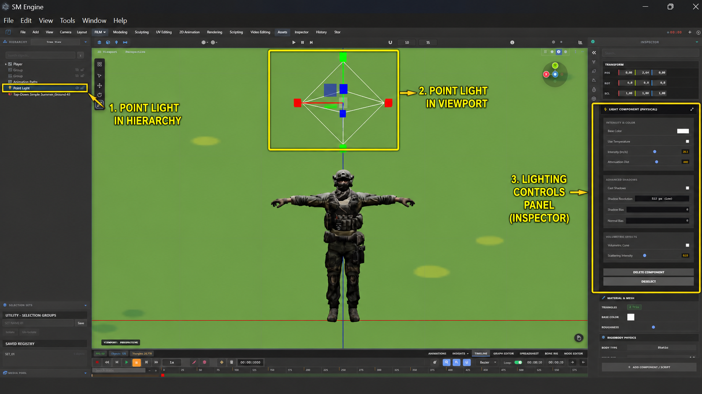
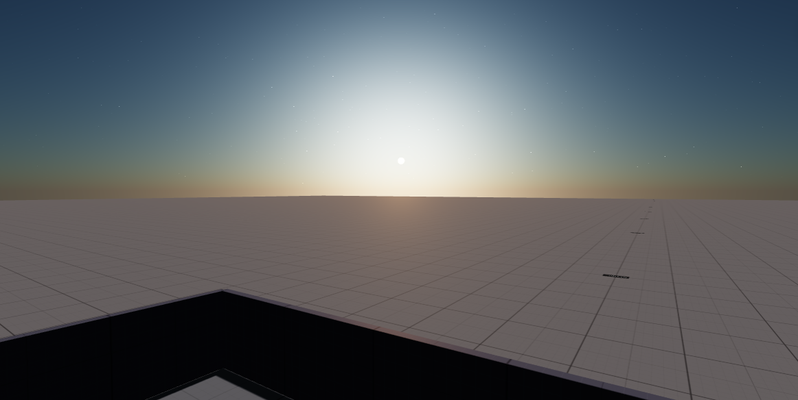

Lighting & Atmosphere System
Technical guide to SM Engine's light object types, sky/atmosphere simulation, shadow map filtering, dynamic water reflections, and Lumen-style real-time GI.
Light Object Types

| Light Type | Icon | Key Parameters | Use Cases |
|---|---|---|---|
| Directional Light | Sun | Intensity, Color, Sun Azimuth/Elevation, Shadow Bias | Simulates sunlight/moonlight with parallel shadow rays. |
| Point Light | Omni | Intensity, Color, Distance Decay, Radius | Omnidirectional light source (lamps, fire, magic spells). |
| Spot Light | Cone | Cone Angle, Penumbra Blur, Distance Decay, Target | Conical directional beam (flashlights, stage spotlights). |
| Area Light | Rect | Width, Height, Intensity, Color, Rect/Disk shape | Soft directional studio lighting (softboxes, windows). |
| Hemisphere Light | Sky/Ground | SkyColor, GroundColor, Intensity | Ambient environmental light gradient between sky and ground. |
Sky & Atmospheric Model

The SkyLightingSystem provides a physical Rayleigh & Mie scattering atmospheric model:
- Time of Day Slider: Smoothly transitions from Sunrise (06:00) → Noon (12:00) → Sunset (18:00) → Midnight (00:00).
- Turbidity & Mie Coefficient: Simulates atmospheric haze, dust particles, and golden hour sunset color hues.
- Sun Orientation: Syncs directional light vector with the sky dome's procedural sun position.
- Workspace rigs: the system binds an environment rig per workspace
(
setWorkspaceMode+ensureRigAttached) — FILM studio, GAME_DEV sky, GAMEPLAY_SAMPLE rig and TERRAIN landscape sky — with shadow updates viarefreshShadowsand a hemisphere ambient fill (hemiLight).
Advanced Water & Ocean System
The advanced-water-system.js module (TerrainAwareWaterSystem)
generates
dynamic water surfaces featuring:
- Layered sine wave displacement (base + micro) with flow boost for rivers.
- Fresnel sky reflections and underwater refraction.
- Procedural foam, optional caustics, deep→shallow color mixing.
- Terrain-aware path drawing with automatic riverbed/lake basin carving.
See Water System for the full workflow, presets and scripting API.
Lumen-Style Real-time Global Illumination
The LumenSystem module computes screen-space radiosity and dynamic indirect light bounce:
- Bounce Intensity: Multiplier scale for indirect light bounces.
- Ray March Step Count: Precision tradeoff between quality and GPU performance.